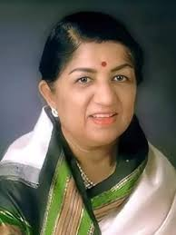

Lata Mangeshkar
1929 - 2022
The Nightingale Of India
Lata Mangeshkar was an Indian playback singer and occasional music composer. She is considered to be one of the greatest and most influential singers of the Indian subcontinent.Her voice was one of the unifying elements of the people of India, Pakistan, Bangladesh and Nepal.Her contribution to the Indian music industry in a career spanning eight decades gained her honorific titles such as the "Queen of Melody", "Nightingale of India", and "Voice of the Millennium".
achievements
- she won Filmfare Award for Best Female Playback Singer.
- She won National Film Award in 1973 for Best Female Playback Singer for the song "Beeti Na Bitai" from the film Parichay. It was composed by R.D Burman and written by Gulzar. She also sang Malayalam song in 1974 ""Kadali Chenkadali" for the film Nellu. It was composed by Salil Chowdhury, and written by Vayalar Ramavarma.
- She a won National Award in 1975 for the song "Roothe Roothe Piya" from Kora Kagaz, composed by Kalyanji Anandji. She also staged several concerts from the 1970s onwards including various charity concerts. In 1974, her first concert was at the Royal Albert Hall, London and she was the first Indian to do so.
- 2009 - ANR National Award
- 2001 - Bharat Ratna, India's highest civilian award
- 1999 - Padma Vibhushan
- 1999 - NTR National Award
- 1984 - State Government of Madhya Pradesh instituted the Lata Mangeshkar Award of Lata Mangeshkar